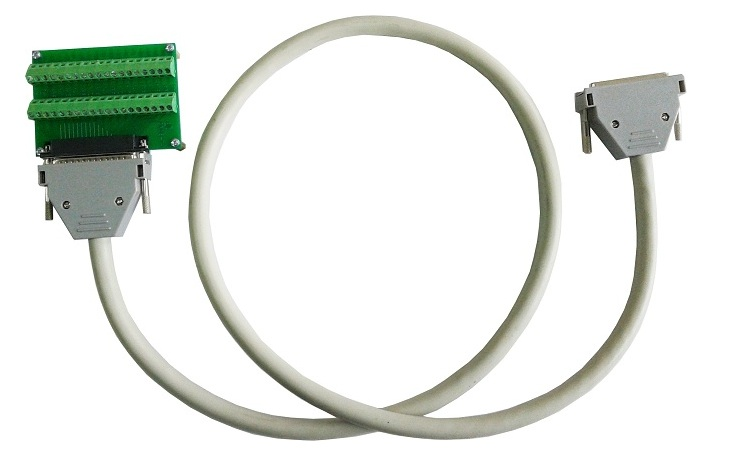

Применяемые специализированные модули АЦП LTR212M1 или LTR212M2 и специализированное коммутационное оборудование обеспечивает прямое, помехоустойчивое и технологичное подключение мостовых, полумостовых и четвертьмостовых (только для модуля LTR212M1) тензодатчиков. Форм-фактор модульной системы LTR производства компании “Л Кард”, включающий модульные станции – крейты LTR с различным количеством установочных мест, позволяет быстро и технологично создавать аналогичные автоматизированные измерительные системы с различным числом измерительных каналов. Все измерительные модули LTR212M1 или LTR212M2, установленные внутри одного крейта LTR, работают относительно общей тактовой частоты крейта и обеспечивают синхронный сбор данных по всем измерительным каналам на аппаратном уровне. И рассмотрим основной пример прикладной тензометрии – Многоканальные тензометрические системы. Многоканальные тензометрические системы можно создавать на основе модификаций Программного комплекса ACTest Platform© для работы с большим числом устройств сбора данных (УСД), например большим числом модулей и крейтов LTR. Вот пример тензостанции на 128 каналов, созданной на основе модификации программного комплекса ACTest Platform Unlim и конструктивно выполненной в виде мобильной приборной стойки (Габаритные размеры: 600х800х1200 мм (высота без учета монитора)). Кабель CR-ET-LTR212 предназначен для удаленного, экранированного подключения тензодатчиков к модулям LTR212M1 или LTR212M2 по четырем измерительным каналам. Со стороны подключения к измерительному модулю этот кабель имеет один общий разъем DB-37F, но каждый измерительный канал здесь выполняется отдельным экранированным кабелем (всего четыре таких кабеля), на удаленных концах которых располагаются экранированные, герметично закрываемые клеммные коробки (всего 4 клеммные коробки, по одной на каждый измерительный канал).